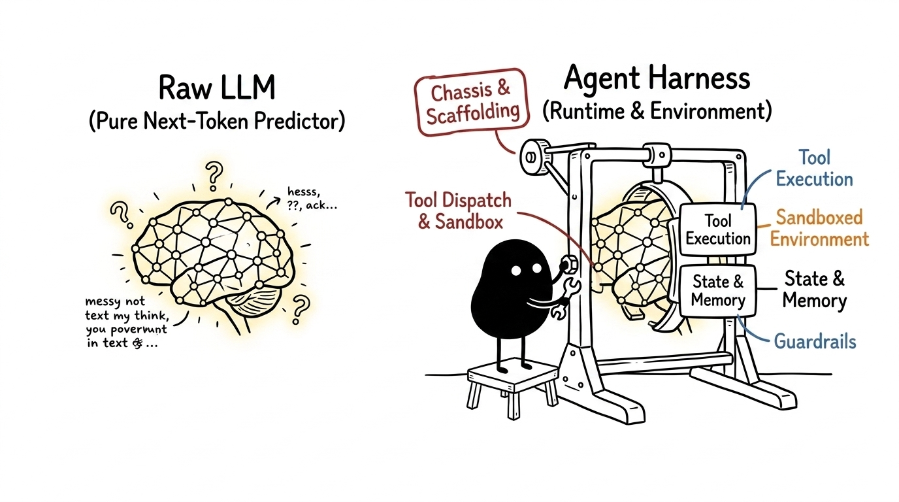
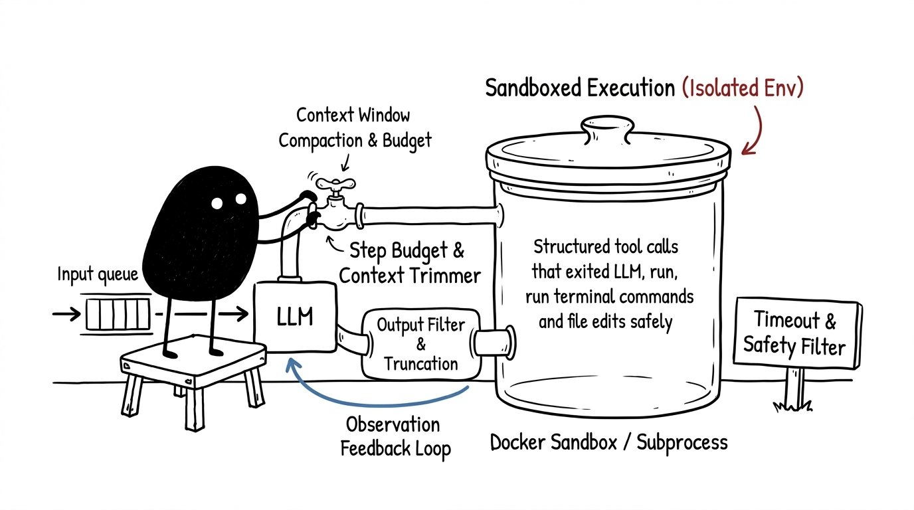

An architectural deep dive into the runtime scaffolding, execution loops, and sandboxing layers that transform pure next-token predictors into reliable autonomous software agents.
An autoregressive Large Language Model is fundamentally a stateless function: it maps a sequence of token IDs to a probability distribution over the next token ID:
A model alone cannot execute a shell command, read a file from a disk sector, observe an exit status code, or enforce a execution budget. When an LLM generates the text string {"name": "run_bash", "args": {"cmd": "pytest"}}, nothing actually runs on your computer until an external system parses that JSON, spawns a child process, captures the standard output stream, and packs that output back into the prompt buffer.
That external system is the Agent Harness.

If the language model is the engine, the harness is the entire vehicle chassis: the steering linkage, transmission, fuel management, safety cages, and diagnostic sensors. Without the harness, the engine simply revs in an isolated vacuum.
Every robust agent harness—whether running production agents like Antigravity, SWE-agent, OpenHands, or benchmark harnesses like SWE-bench—manages five core subsystems:
flowchart LR
subgraph Harness["Agent Harness Runtime Scaffolding"]
direction LR
A["1. Tool Dispatch"] --> B["2. Sandbox Runtime"]
B --> C["3. Output Filter"]
C --> D["4. Context Buffer"]
D --> E["5. Guardrails"]
end
The harness translates host functions (Python functions, REST endpoints, CLI binaries) into schema definitions that the model understands (typically JSON Schema). When the model emits a structured tool call, the harness intercepts the payload, deserializes arguments, validates types, and dispatches the execution to the appropriate backend.
Autonomous agents execute arbitrary code, which introduces severe risks of resource exhaustion, unintended file destruction, or rogue network calls. The harness isolates execution within ephemeral sandboxes—such as Docker containers, Firecracker microVMs, temporary Git worktrees, or restricted OS subprocesses with memory and CPU ulimit caps.
A single cat massive_dataset.csv or recursive directory listing can produce megabytes of output, instantly blowing past context limits or incurring massive token billing. The harness acts as an intelligent buffer: it slices oversized stdout streams, preserves crucial head/tail fragments, and formats the output into clean observation messages.
The harness maintains the append-only conversation trajectory. It sequences system instructions, user turns, assistant reasoning blocks, tool invocations, and environment feedback into the canonical format expected by the target model API.
Left unconstrained, an LLM encountering an unfamiliar syntax error might loop infinitely, repeatedly running the same broken command. The harness enforces deterministic circuit breakers: maximum step limits (N_{\text{max}}), dollar budget thresholds, execution timeouts (T_{\text{timeout}}), and regex-based output loop detectors.

The core execution mechanics of an agent harness operate as a synchronous or asynchronous state machine over discrete timesteps t \in \{1, 2, \dots, T\}.
flowchart LR
Start["User Goal"] --> Prompt["Construct Prompt Buffer $S_t$"]
Prompt --> Model["Sample LLM: $\mathcal{M}(S_t) \to a_t$"]
Model --> Check{"Is $a_t$ a Tool Call?"}
Check -- "Yes" --> Exec["Execute in Sandbox: $e_t = \text{Exec}(a_t)$"]
Exec --> Trunc["Format & Truncate: $o_t = \text{Filter}(e_t)$"]
Trunc --> Budget{"Budget & Loop Check"}
Budget -- "Within limits" --> Prompt
Budget -- "Exceeded" --> Terminate["Halt: Budget Exhausted"]
Check -- "No (Final Output)" --> Done["Return Agent Result"]
At step t, the harness constructs state S_t from system instructions, past actions a_{1:t-1}, and environment observations o_{1:t-1}. The model emits action a_t:
If a_t requests tool execution with timeout \tau, the harness executes the action inside the sandbox:
The observation o_t is appended to the trajectory, the step counter is incremented t \leftarrow t + 1, and the loop resumes until the agent signals completion or hits safety thresholds.
Here is a functional, production-style agent harness implemented in Python that illustrates sandbox timeouts, output truncation, and step budgets without third-party framework overhead:
import json
import subprocess
from dataclasses import dataclass, field
from typing import Any, Callable, Dict, List
@dataclass
class ToolResult:
stdout: str
stderr: str
exit_code: int
is_truncated: bool = False
class SandboxRunner:
def __init__(self, workdir: str, timeout_seconds: int = 15, max_output_chars: int = 4000):
self.workdir = workdir
self.timeout = timeout_seconds
self.max_chars = max_output_chars
def execute_bash(self, command: str) -> ToolResult:
try:
proc = subprocess.run(
command,
shell=True,
cwd=self.workdir,
capture_output=True,
text=True,
timeout=self.timeout
)
raw_out, raw_err = proc.stdout, proc.stderr
exit_code = proc.returncode
except subprocess.TimeoutExpired:
return ToolResult(
stdout="",
stderr=f"Error: Command timed out after {self.timeout}s.",
exit_code=124
)
# Truncate output to preserve LLM context budget
is_truncated = len(raw_out) > self.max_chars
if is_truncated:
half = self.max_chars // 2
raw_out = f"{raw_out[:half]}\n\n[... Truncated {len(raw_out) - self.max_chars} chars ...]\n\n{raw_out[-half:]}"
return ToolResult(stdout=raw_out, stderr=raw_err, exit_code=exit_code, is_truncated=is_truncated)
class AgentHarness:
def __init__(self, sandbox: SandboxRunner, max_steps: int = 10):
self.sandbox = sandbox
self.max_steps = max_steps
self.trajectory: List[Dict[str, Any]] = []
def run_loop(self, user_goal: str, llm_client: Callable[[List[Dict[str, Any]]], Dict[str, Any]]) -> str:
self.trajectory.append({"role": "user", "content": user_goal})
for step in range(1, self.max_steps + 1):
# 1. Model inference step
response = llm_client(self.trajectory)
self.trajectory.append(response)
# 2. Check if agent finished or made a tool call
tool_calls = response.get("tool_calls", [])
if not tool_calls:
return response.get("content", "Task completed.")
# 3. Intercept and execute tool calls in sandbox
for call in tool_calls:
name = call.get("name")
args = call.get("arguments", {})
if name == "bash":
res = self.sandbox.execute_bash(args.get("command", ""))
obs_payload = {
"exit_code": res.exit_code,
"stdout": res.stdout,
"stderr": res.stderr
}
else:
obs_payload = {"error": f"Unknown tool: {name}"}
# 4. Feed observation back to conversation history
self.trajectory.append({
"role": "tool",
"tool_call_id": call.get("id"),
"content": json.dumps(obs_payload)
})
return "Terminated: Reached maximum step limit."
In modern AI engineering, the word harness is commonly used in two distinct but related contexts:
| Dimension | Production Runtime Harness (e.g. Antigravity / OpenHands) | Benchmark Evaluation Harness (e.g. SWE-bench / GAIA) |
|---|---|---|
| Primary Goal | Accomplish user tasks safely in live production environments. | Measure model coding/problem-solving accuracy under standardized conditions. |
| Environment Lifecycle | Long-lived workspace or user session with interactive feedback. | Ephemeral container spun up per task instance and immediately torn down. |
| Verification Method | User acceptance, linter passes, live manual verification. | Automated unit test suites (git diff \to eval.sh \to pass/fail matrix). |
| Data Integrity | User-facing privacy, security fences, and access control. | Anti-contamination filters, pre-installed test harnesses, gold patch comparisons. |
In benchmarks like SWE-bench, the evaluation harness automates hundreds of parallel runs: cloning repository commits, applying agent git patches, executing repo-specific test harnesses (e.g. pytest tests/test_parser.py), and asserting whether failing tests flipped to passing without breaking existing test suites.